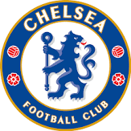
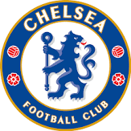
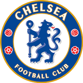

.jpg) 

I am 11. I am a Sports FANATIC and my favorite soccer team is Chelsea.
Some of my favorite foods are Pizza,Chicken wings,my mom's chicken nuggets,and chicken
sandwiches.(I like Chicken a LOT) My favorite soccer player is Lionel Messi. I have a few friends from my old school
that are in Argyle. They are Jeremiah, Liam, and Jose. My favorite color is Blue. I other sports
I play are Basketball at Center,Baseball as a 2nd base,Kickball at 2nd base as well, I sometimes play
vollyball. I also played tennis before and am ok.

I learn a lot. Some websites I go on are Khan Academy, Prodigy,
Epic and more!I want to be a CEO when I grow up.NO ONE
will stop me. Some things I do in my free time is swim, play soccer, I talk about sports,the stock market,and Coding. My favorite sport is Soccer.
In my old school, I was one of the most popular people in the school. Sometimes, my dad calls me "Nati boy". I'm very good at soccer.
I am a winger and scored 45 goals and it was the most in the school. I also was the best goalkeeper but I hated it.
I have parents that are from Ethiopia. There were 2 reasons they left. The 1st was because there was more opportunity in the US. The other reason was because they didn't like Abiy Ahmed.
I also have one brother named Noah. My mom's favorite athlete is Kobe Bryant.My dad's favorite athlete is Haile Gebrselassie. My brother's favorite athlete is Lionel Messi.
Some memories we all have was when we went to 2 soccer games. They were preseason and the games were Brentfond vs Aston Villa and Chelsea vs Fulham. We had so much fun. The score for the first game was
3-3 and for the 2nd game was 2-0 Chelsea Another memory I have is when we went to Virginia Beach. It was a vacation. I loved It. We went inside a sweet hotel,they served us breakfast in a different part of the hotel
There was a cool beach that had very nice waves. While the wave was coming at us we would jump over it. My mom did not like it so she just watched me,Noah and my dad do it. It was awesome!